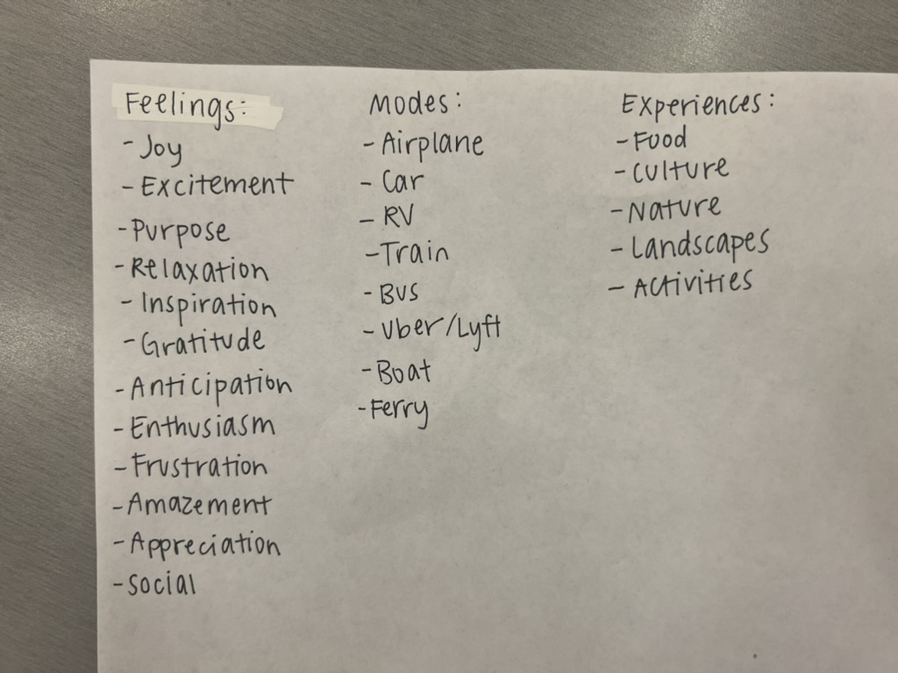

Itinero
Seamlessly blending adventure and organization. Itinero is about balancing the thrill of exploration with the need for efficient organization.
I conducted semi-structured interviews with five participants and affinity diagrammed them to categorize user insights into themes.

Based on the findings, we prioritized key features:
Itinerary creation and editing
Personalized recommendations for food and activities
I sketched out wireframes on paper to visualize the core features of the app.

I wrote out some words and feelings typically experienced during travel that I wanted to incorporate into my design.

From there, I gathered some images to build a mood board. My goal was to capture the essence of travel,
featuring things such as passports, suitcases, travel journals, cameras, maps, airplanes, and various
places across the world.
I realized my mood board featured a lot of calming blue shades, so I
decided to go with blue for the logo and primary accent color. This color evokes a sense of calm and
resonates with the emotions associated with exploration—joy, inspiration, and relaxation.

I started by first sketching various concepts on paper, incorporating travel elements such as location pins, compasses, and planes to capture the essence of the brand.
Initial Logo Sketches on Paper
Next, I translated the conceptual sketches into a low-fidelity prototype through Figma, mainly focusing on key screens and functions.